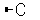
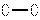
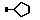
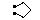
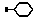
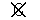

|
CCP4i: Graphical User Interface |
| Monomer Library Sketcher |


|
The layout of each task window, i.e. the number of folders present, and whether these folders are open or closed by default, depends on the choices made in the Protocol folder of the task (see Introduction). Although certain folders are closed by default, there are specific reasons why you should or may want to look at them. These reasons are described in the Task Window Layout sections below.
This is an interface to the Libcheck program which creates new monomer library descriptions for use in refinement. You should use this if you have a novel residue or ligand which is not in the geometry library or if you want to look at the contents of the geometry library.
Note that the Sketcher will only display a relatively small number of atoms. Trying to read in a whole protein will just freeze it absolutely. You have been warned.
There is a tutorial introducing the Sketcher and Refmac.
There is a large library (by default in $CLIBD_MON/...) which provides the geometry restraints used in energy minimisation by Refmac. The library contains over one thousand monomers (basic units for biologically relevant polymers) and small molecules which may occur as ligands in crystallography. These will just be referred to as 'monomers'. If your structure includes a monomer which is not in the library, you will need to use the Sketcher to enter sufficient information about the monomer for the program LIBCHECK to generate a library entry for your monomer.
The information required is a 'minimal description' of the molecule which consists of:
Optionally you can also define the chirality or the planar groups rather than take the definitions derived automatically.
The easiest way to enter this information is to sketch the monomer which provides the bonding information and then edit the element types, atom names and formal charge in the Edit Table on the right hand side of the Sketcher. Sketching the monomer will probably be easier if you can refer to a diagram of the chemical structure.
If the monomer structure is available as a PDB or CIF file it can be read in, or, if a similar monomer is already in the library, it can be loaded from the library and edited. An extra advantage to editing an existing library entry is that it will start from something conforming to atom naming conventions.
This program will be easier to understand if you think of it as a 'sketcher', where you sketch in the framework of a monomer, rather than a 'builder', where you bolt together fragments of the monomer. It is not important if the sketch does not have good molecular geometry so long as it shows the correct bonds. The sketching tools will initially set all atoms to be carbon atoms. You can change the element type in the Edit Table on the right hand side of the sketcher. The Edit Table should also be used to set the atom names and formal charge. It is also possible to set the atom type - this is not usually necessary as the atom type can be deduced.
Unless you have all hydrogen atoms defined you should specify which bonds are double or triple bonds. With this information Libcheck can derive correct atom types and assign hydrogen atoms. Note that there is no recognised aromatic bond type - for ring structures you should enter the double bonds for one of the Kekulé structures.
The Libcheck program will identify chiral centres in an input structure and will, by default, set the chirality to 'both' - which means that both chiralities are allowed, so no chirality restraint is applied. If you want to enforce a chiral restraint, you should define it in the Chirality Table at the bottom right of the Sketcher window. The easiest way to do this is probably to run Libcheck once and let it define the chiral centres, then you can edit the definitions and rerun Libcheck. The chiral definitions set in the table are input to Libcheck and will appear in the complete geometry description generated by Libcheck and will be used in generating the output structure. When Sketcher reads in coordinates from a PDB or CIF file it will attempt to define all of the chiral centres but the user should check these carefully.
After you have sketched in the structure and set the atom names and types, use the Create Library Description option under the File pull-down menu to generate a complete geometric description using the Libcheck program. A PDB file containing idealised coordinates for the monomer is also generated and automatically displayed in the Sketcher. If this structure is not correct, you have three options:
When you are satisfied with the result, you can add the new library entry to your personal geometry library
Use the Recentre View button to place the molecule in the centre of the display in the same orientation.
Note that new atoms will be placed where you click with the position in and out of the screen the same as the active atom. This may lead to monomers with 'bad' geometry - this does not matter.
| Button | Function | Use Shift-Left Mouse to click on |
|---|---|---|
| 'Do nothing' | switch off all edit functions | |
| 'Undo last edit' | return to structure before the last edit was performed | |
|  | Add one atom | Atom position of new atom, close to active atom |
|  | Add a bond | The atom to be bonded to the active atom |
|  | Add 5-membered ring | Atom position of new atom, close to active atom |
|  | Add 3 atoms which will form 5-membered ring appended to existing ring | Atom bonded to the active atom which will be second anchor point |
|  | Add 6-membered ring | Atom position of new atom, close to active atom |
| Add 4 atoms which will form 6-membered ring appended to existing ring | Atom bonded to the active atom which will be second anchor point | |
|  | Delete atom | Atom to be deleted |
| Delete bond | Bond to be deleted | |
| 'Recentre View' | place monomers in centre of screen, in current orientation |
The position of atoms is usually unimportant for Creating Descriptions but you may wish to move atoms for clarity and you may need to move atoms before regularising if the structure is stuck in a false minimum. Make sure that you have the Move Fragment option selected from the Mouse Mode menu (on the panel to the left of the main window). It is possible to select more than one active atom - with the keyboard Control key held down and clicking on atoms with the right mouse button:
| Action | Result |
|---|---|
| Single click on non-active atom | Make that atom active |
| Single click on active atom | Make that atom non-active |
| Double click on atom | Make all atoms which are in bonded fragment active |
To move the fragment, hold down the Shift key on the keyboard and either:
The currently displayed atoms are listed on the right hand side of the sketcher window. The columns are:
The chiral centres are usually deduced automatically by Libcheck when you run Create Description but they are assigned the chirality of 'both' which means that either chirality is allowed. If you wish to enforce a given chirality then you should define it in the Chirality Table. You can add or remove a chiral definition using the edit buttons at the bottom of the table.
A monomer structure can be read in from various file formats. Alternatively, one or more fragments which help to build up the monomer can be imported and edited as necessary. BEWARE: attempting to read in a whole large molecule will just freeze the Sketcher. Whatever the format of the input file, you will have the options to:
Under the File pull-down menu, the Read File options are:
A list of the monomers in the library, sorted by chemical type, is displayed. You should select a monomer from the list and suitable names for the output files will be generated. The two output files are:
Select a file to read - note that if the file contains multiple residues, you must enter the residue type and/or id of the required residue. Only the first residue which satisfies the selection criteria will be read.
On reading the coordinate file the sketcher will define bonded atoms on the basis of proximity but will not attempt to assign the bond order, (i.e. single, double or triple bond); you will need to edit these by clicking on the bond with the right mouse button and the Shift key depressed. The Sketcher will try to find chiral centres and list them. Any carbon atom with three connected atoms which are not too close to planar will be assumed to be chiral. Users should check that all the chiral centres have been found, especially if the input coordinates are poor.
A .def file is the CCP4i 'native' format and if you wish to save whatever you have currently displayed, use the option to Save to CCP4i Def File and reload it later with this option.
If you need to save what you currently have displayed, for instance to use as the basic template for a range of monomers or as a fragment which you will want to add to various monomers, use the option to Save to CCP4i Def File.
This option will create a file containing the information which needs to go into a monomer library and also a CIF coordinate file containing idealised coordinates for the monomer. The idealised coordinates will be displayed in the Sketcher and you are advised to check the result carefully. There is an option to run Refmac to regularise the idealised structure. This may be necessary for more complex structures.
You need to enter a unique code name for the monomer and some fuller name to identify the structure. You should also choose the chemical category for the structure from the menu. Default file names for the three files which will be generated are derived from the code name.
When creating the library description there are options:
The list of planar groups generated by Libcheck should be correct but this option will enable you to visualise the planes and if necessary change the definitions. If you do need to change these definitions then be aware that there may be a more fundamental problem of incorrect atom typing and that an atom which is a chiral centre can not also be in a planar group. This tool can save the planar group definitions to a CIF file. If you wish to use these changed definitions then you will need to edit the monomer library file and replace the planar group definitions with those you have saved from the tool.
A table showing the currently defined planar groups is displayed. The atoms in the planar group can be changed either by editing the list of atoms in the table or by clicking on the Edit button for one planar group and then clicking on atoms on the display using either the middle mouse button or, with the Control key depressed, the right mouse button. The atoms in the plane are indicated by flashing name labels. Clicking on an atom currently in the plane definition will remove it from the plane definition.
If you want to create a new plane definition then click on the Add Plane button at the bottom of the table. You can then click on the Edit button to select the atoms using the display. To save your changes you must click on the Save to File button under the table. While you are editing the planar definitions the mouse mode options to Edit Monomer and Move Fragment are not available.
If you have saved your changes after editing the plane definitions then the Create Library Description tool will have an option to Use user-defined planar groups. If you select this option then Libcheck will retain the planar group definitions that you provided but, beware, there is no checking for consistency with any other parameters.
Regularise the currently displayed monomer. Note that a geometric description file must already have been created using the Create Description option OR the structure must be a monomer already in a library file. Note that if you have changed the atomic composition, atom names, atom types or bond types since running Create Description then you must run it again. To run Regularize Structure you will be asked to enter the name of a geometry description file or a geometry library file and the id of your monomer in that file.
This will completely reinitialise the monomer data in the Sketcher.
The default graphic parameters for the sketcher may not suit all systems or users - you can change them with this option. Let us know if any other aspect of the display is not optimal for your system.
The 3-D Viewer is based on code by Leo Caves (University of York) and Mike
Hartshorn (Astex Technology).
Kim Henrick (EBI) provided information on web resources.
|
|